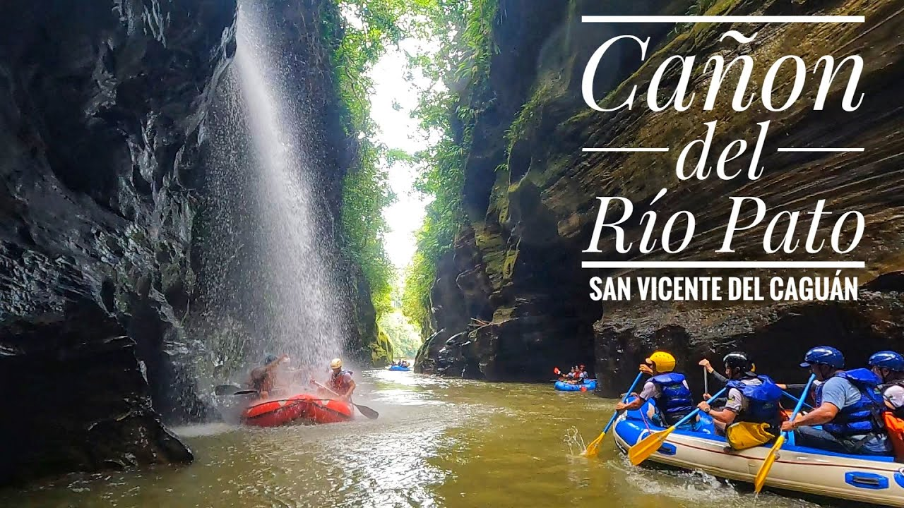
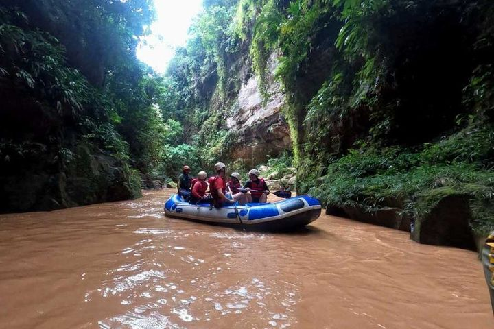
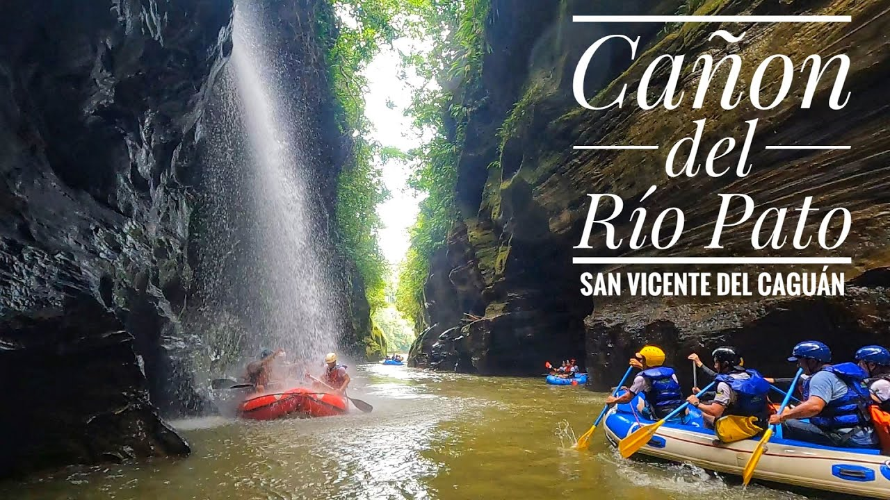
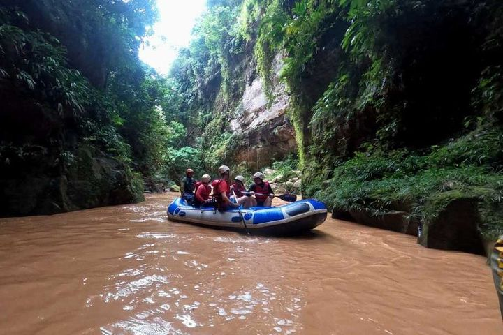

Rio Pato
 



El Río Pato es un hermoso curso de agua que serpentea a través de paisajes exuberantes, convirtiéndose en un refugio para diversas especies de fauna y flora. Ideal para actividades recreativas como el kayak y la pesca, este río es perfecto para quienes buscan una experiencia de aventura en un entorno natural. Disfruta de un día de exploración y diversión mientras te maravillas con la belleza de la naturaleza que rodea el Río Pato.